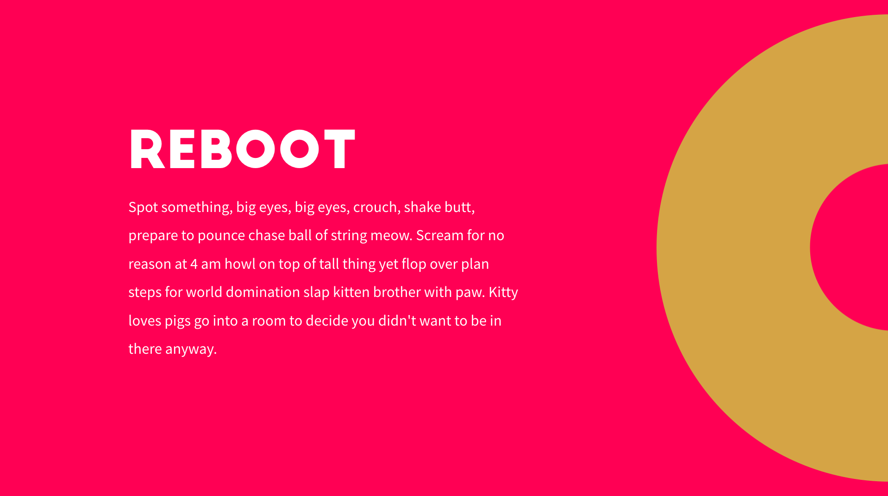

KRIG
Creative Director & Co-founder
I am currently work as Creative Director and am co-founder of freelance collective KRIG. Here I have been part of various projects for amongst others making the branding/logo for Technigo. We are currently creating our own site as well as a site about online safety Säker.online, our own member system Medlm and a web application for organisation of shopping lists for eventsRodda.
